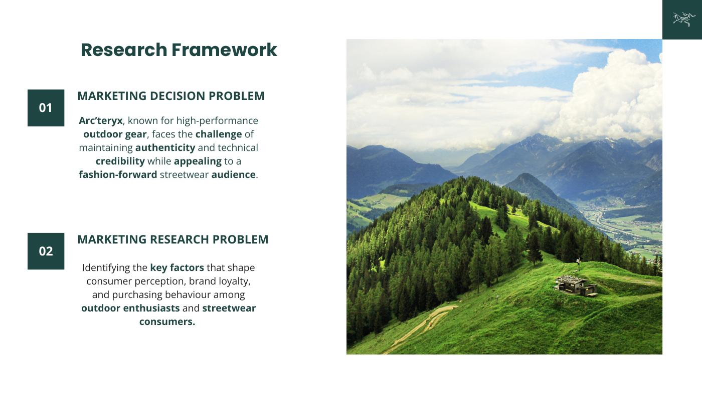
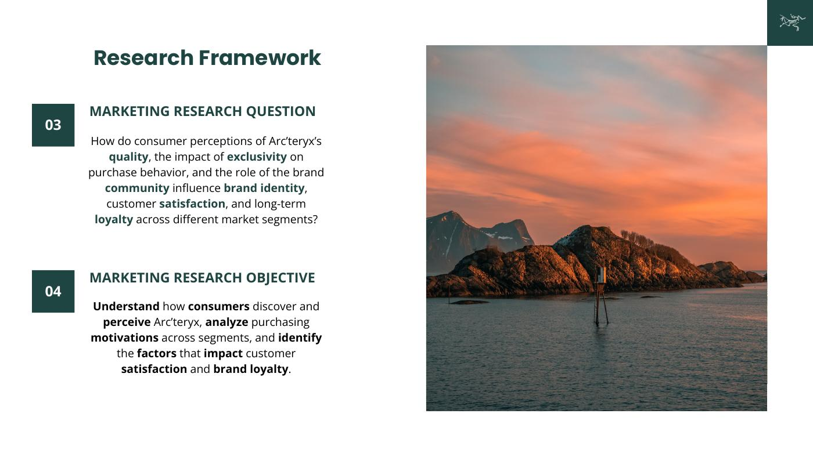
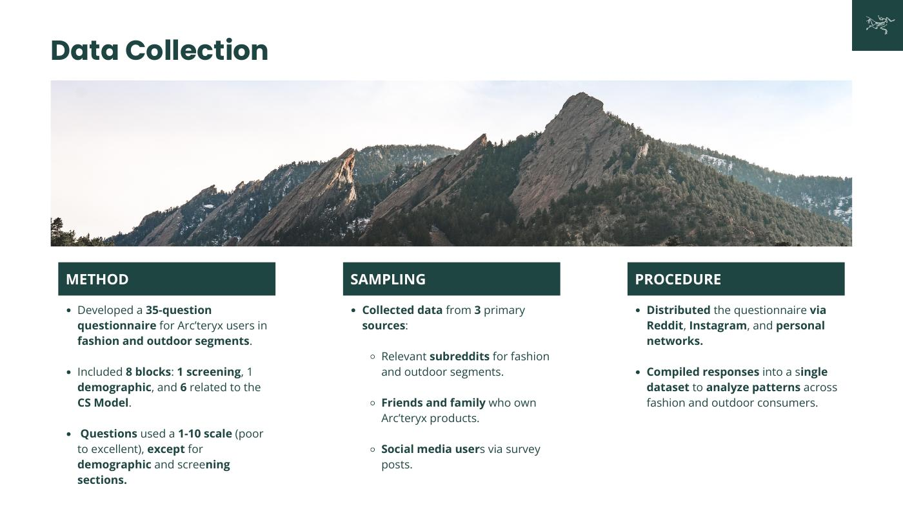
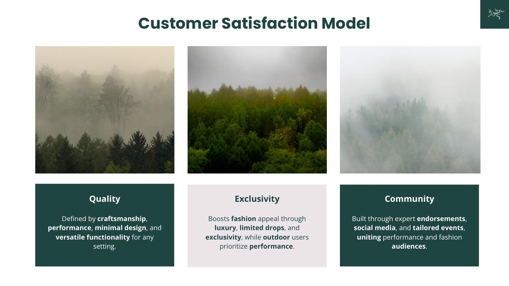
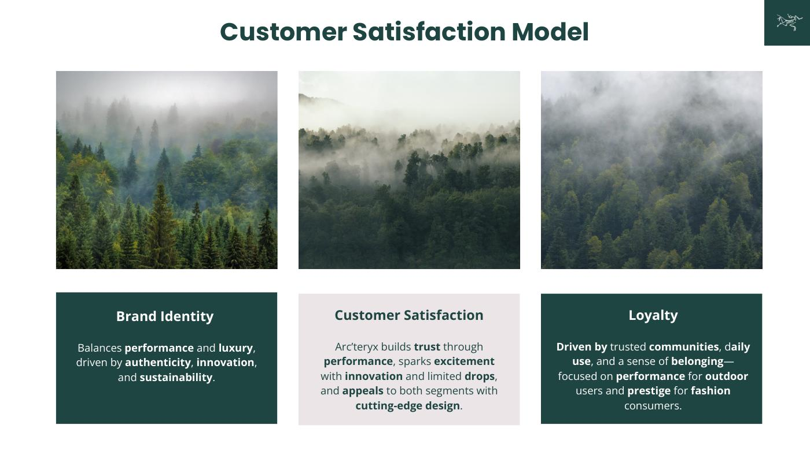
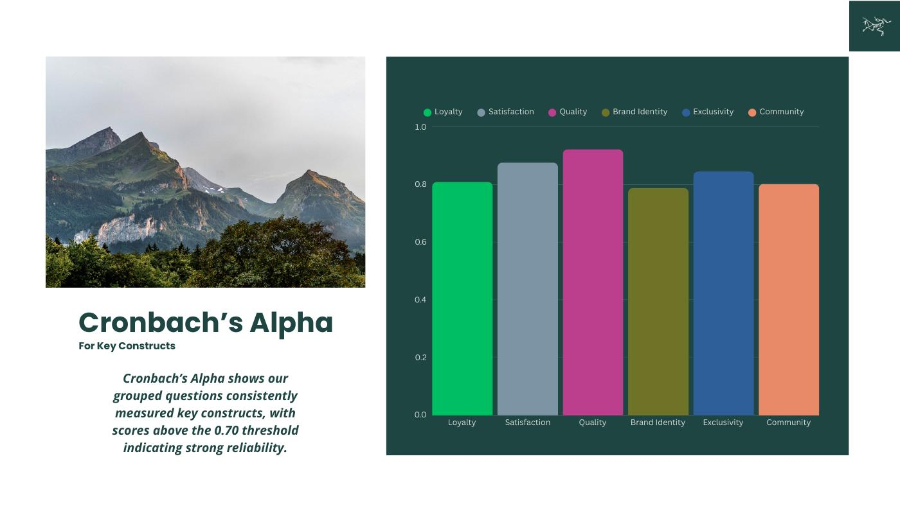
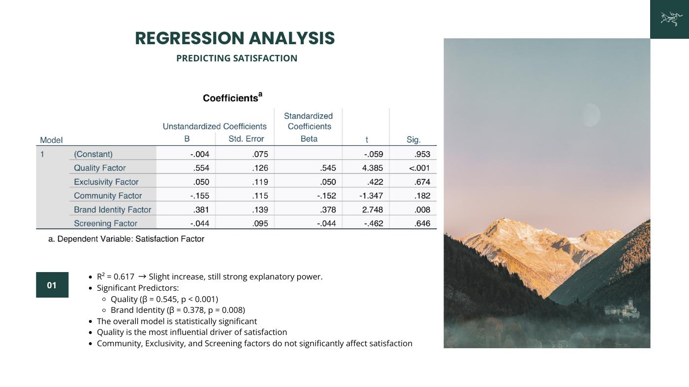
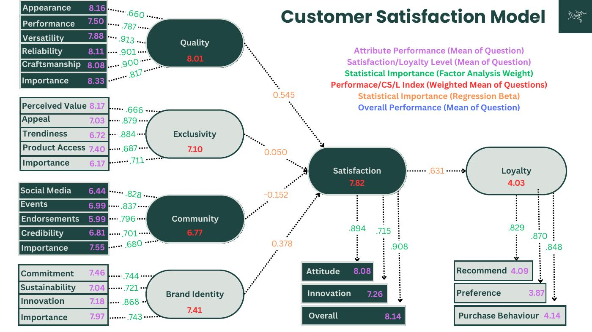

A consumer research study examining quality, exclusivity, community, brand identity, satisfaction and loyalty at Arc'teryx.
The study examined how consumers discover and perceive Arc'teryx and which factors influence satisfaction and long-term loyalty.






The regression model predicting satisfaction reported R² = .617, with quality β = .545 and brand identity β = .378.

